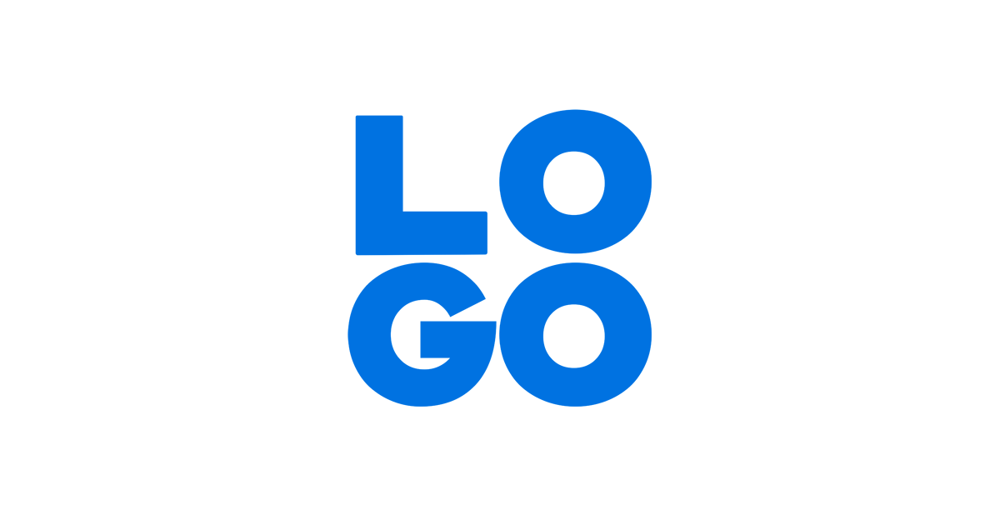

<nav class="navbar navbar-expand-lg navbar-light bg-primary">
  <div class="container-fluid">
    <a class="navbar-brand" href="#"></a>
    
    <button class="navbar-toggler" type="button" data-bs-toggle="collapse" data-bs-target="#navbarText" aria-controls="navbarText" aria-expanded="false" aria-label="Toggle navigation">
      <span class="navbar-toggler-icon"></span>
    </button>
    <div class="collapse navbar-collapse" id="navbarText">

      <ul class="navbar-nav me-auto mb-2 mb-lg-0 center">
        <li class="nav-item text-center">
          <a class="nav-link active text-white" aria-current="page" routerLink="/website/statistics">الاحصائيات</a>
        </li>
        <li class="nav-item  text-center">
          <a class="nav-link text-white" routerLink="/website/reports/daily-reports">التقارير </a>
        </li>
        <li class="nav-item logout">
          <a class="nav-link text-white" aria-current="page" routerLink="/login">تسجيل خروج</a>
        </li>
      </ul>
    </div>
  </div>
</nav>
<router-outlet></router-outlet>
